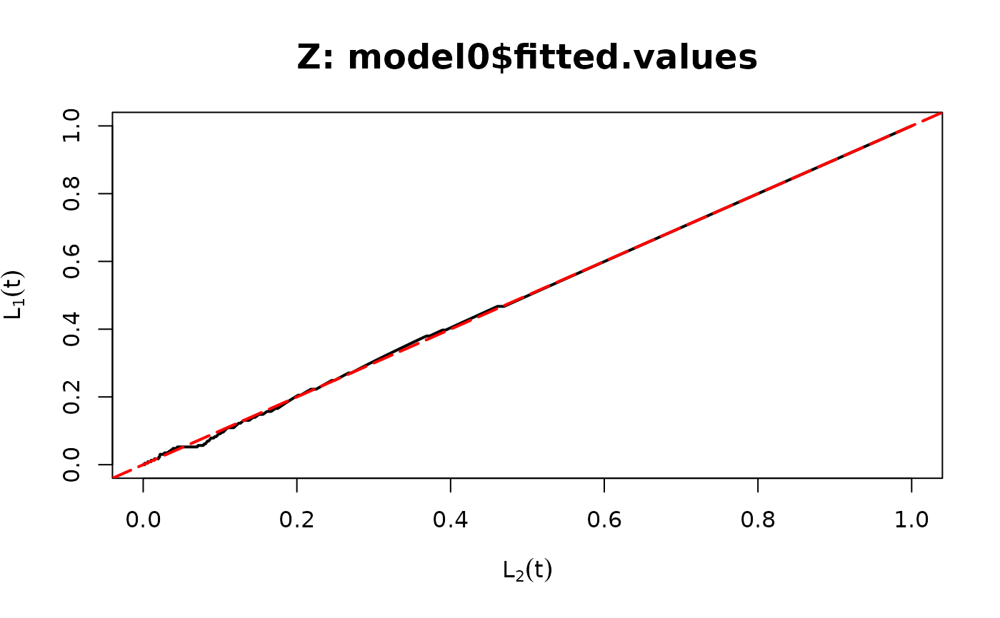
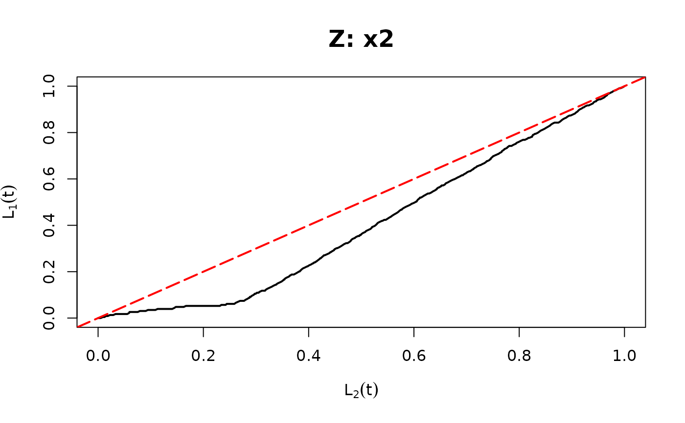
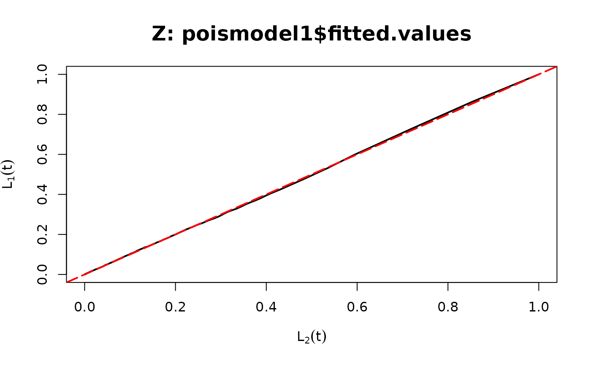
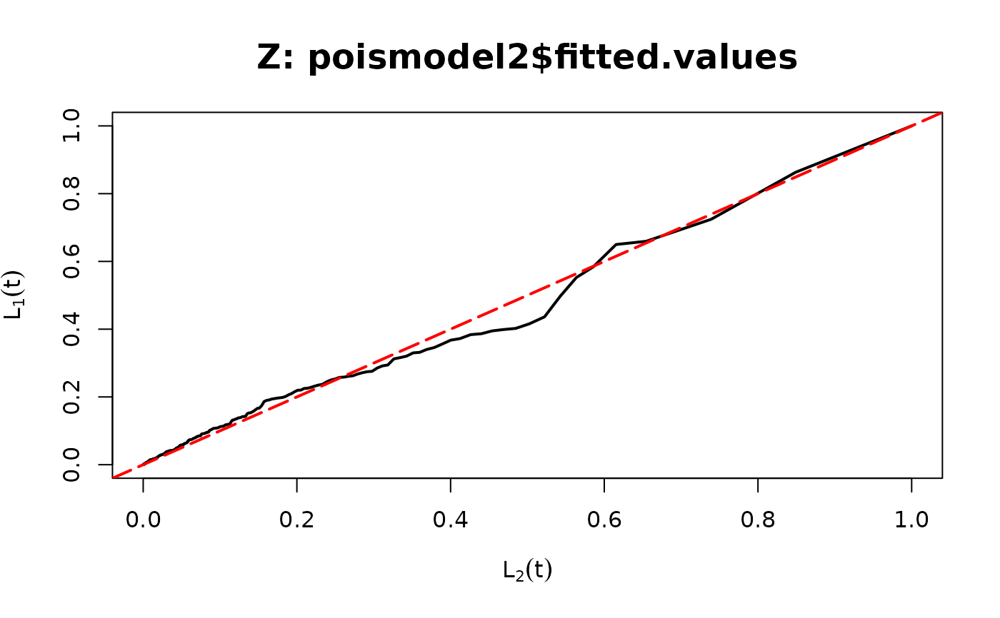
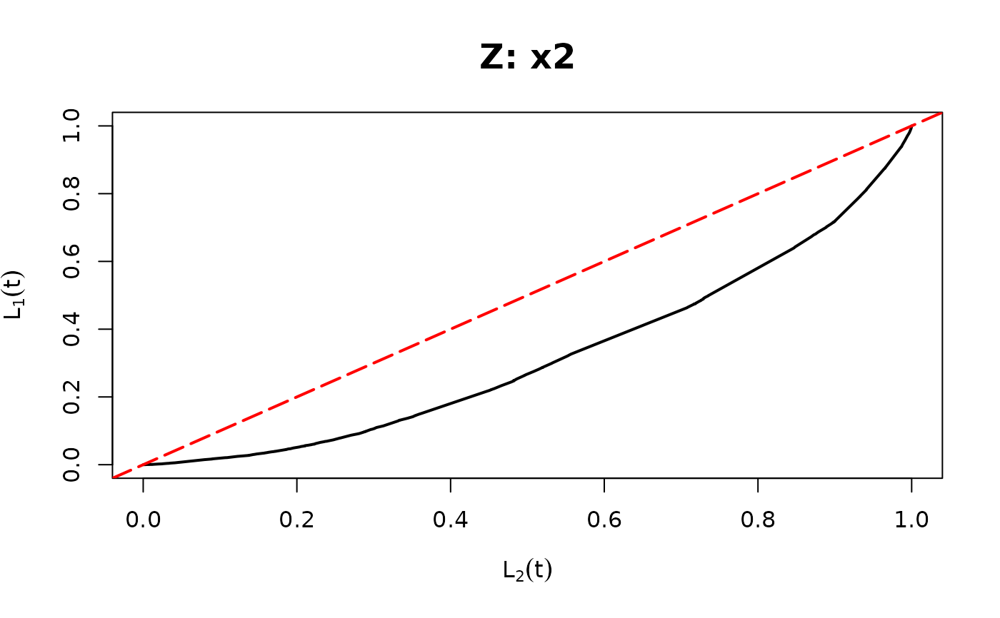

Creates a plot to assess the mean structure of regression models. The plot compares the cumulative sum of the response variable and its hypothesized value. Deviation from the diagonal suggests the possibility that the mean structure of the model is incorrect.
Arguments
- model
Regression model object (e.g.,
lm,glm,glm.nb,polr,lm)- thr
Threshold variable (e.g., predictor, fitted values, or variable to be included as a covariate)
Details
The ordered curve plots $$\hat{L}_1(t)=\frac{\sum_{i=1}^n\left[Y_i1(Z_i\leq t)\right]}{\sum_{i=1}^nY_i}$$ against
$$\hat{L}_2(t)=\frac{\sum_{i=1}^n\left[\hat{\lambda}_i1(Z_i\leq t)\right]}{\sum_{i=1}^n\hat{\lambda}_i},$$
where \(\hat{\lambda}_i\) is the fitted mean, and \(Z_i\) is the threshold variable.
If the mean structure is correctly specified in the model, \(\hat L_1(t)\) and \(\hat L_2(t)\) should be close to each other.
If the curve is distant from the diagonal, it suggests incorrectness in the mean structure.
Moreover, if the curve is above the diagonal, the summation of the response is larger than
the fitted mean, which implies that the mean is underestimated, and vice versa.
The role of thr (threshold variable \(Z\)) is to determine the rule for accumulating \(\hat{\lambda}_i\) and \(Y_i\), \(i=1,\ldots,n\)
for the ordered curve.
The candidate for thr could be any function of predictors such as a single predictor (e.g., x1),
a linear combination of predictor (e.g., x1+x2), or fitted values (e.g., fitted(model)).
It can also be a variable being considered to be included in the mean function.
If a variable leads to a large discrepancy between the ordered curve and the diagonal,
including this variable in the mean function should be considered.
For more details, see the reference paper.
References
Yang, Lu. "Double Probability Integral Transform Residuals for Regression Models with Discrete Outcomes." arXiv preprint arXiv:2308.15596 (2023).
Examples
## Binary example of ordered curve
n <- 500
set.seed(1234)
x1 <- rnorm(n, 1, 1)
x2 <- rbinom(n, 1, 0.7)
beta0 <- -5
beta1 <- 2
beta2 <- 1
beta3 <- 3
q1 <- 1 / (1 + exp(beta0 + beta1 * x1 + beta2 * x2 + beta3 * x1 * x2))
y1 <- rbinom(n, size = 1, prob = 1 - q1)
## True Model
model0 <- glm(y1 ~ x1 * x2, family = binomial(link = "logit"))
ord_curve(model0, thr = model0$fitted.values) # set the threshold as fitted values

## Missing a covariate
model1 <- glm(y1 ~ x1, family = binomial(link = "logit"))
ord_curve(model1, thr = x2) # set the threshold as a covariate

## Poisson example of ordered curve
n <- 500
set.seed(1234)
x1 <- rnorm(n)
x2 <- rnorm(n)
beta0 <- 0
beta1 <- 2
beta2 <- 1
lambda1 <- exp(beta0 + beta1 * x1 + beta2 * x2)
y <- rpois(n, lambda1)
## True Model
poismodel1 <- glm(y ~ x1 + x2, family = poisson(link = "log"))
ord_curve(poismodel1, thr = poismodel1$fitted.values)

## Missing a covariate
poismodel2 <- glm(y ~ x1, family = poisson(link = "log"))
ord_curve(poismodel2, thr = poismodel2$fitted.values)

ord_curve(poismodel2, thr = x2)
